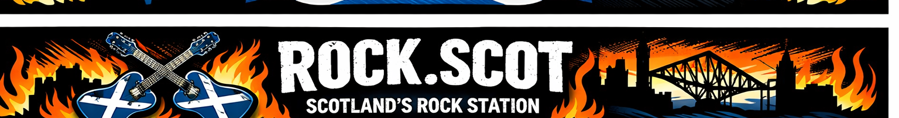
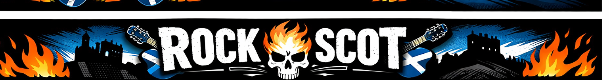
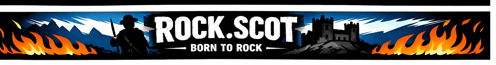
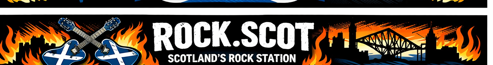
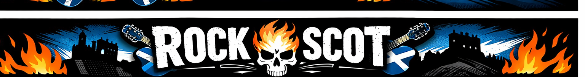
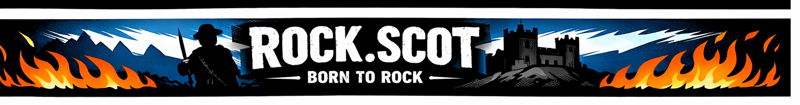
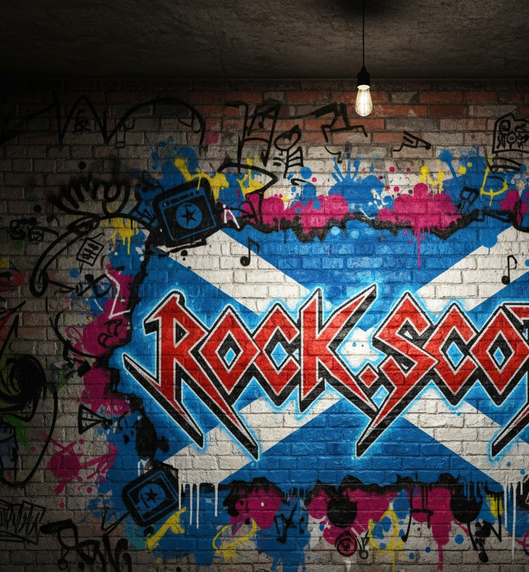

The Movement
Scotland Needed a Rock Station.
So We Built One.
Scotland has always had rock in its blood. From stadium anthems to underground clubs — the music never stopped. The station just hadn't caught up.
We launched ROCK.SCOT because Scotland deserves better than playlist algorithms and corporate radio. A station with attitude, with real curation, with a DJ who lives and breathes this music.
"ROCK.SCOT isn't just another radio station. We're a movement."
We started in Inverclyde, North Ayrshire, and South Lanarkshire. That's our foundation. But Scotland doesn't stop there — and neither do we. Our vision is all of Scotland.
24/7
Live Broadcasting
410K+
Population Reach
DAB+
Digital Radio
20+
Years Experience